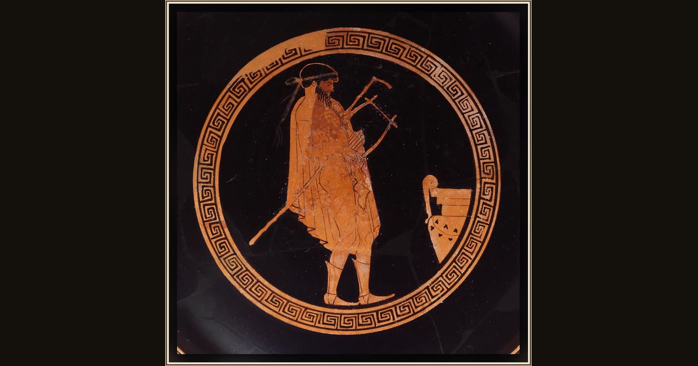

Terracotta kylix (drinking cup)
Pistoxenos Painter · ca. 480–470 BCE · met
A drinking cup shows a bearded man in a cloak carrying a lyre and staff; the Athenian considers what benefit a properly guided wine-party could bring (641b). Explore its place in Plato's Dialogues, Laws · Book I, section 84.